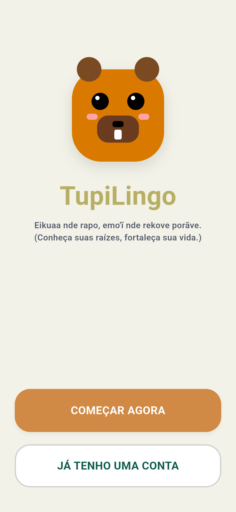
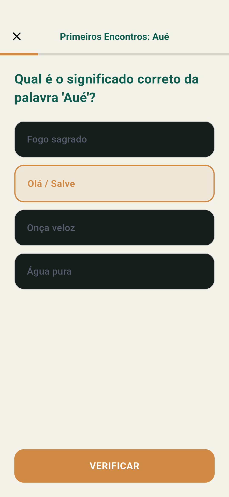
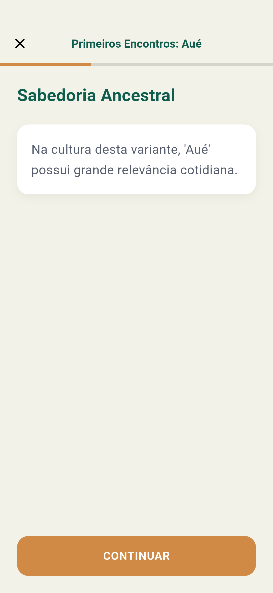

Aprenda Tupi Antigo de forma estruturada e interativa.
Uma iniciativa aberta de salvaguarda linguística e preservação do patrimônio histórico brasileiro, fundamentada na literatura filológica do Prof. Dr. Eduardo de Navarro.

Teste os Exercícios Diretamente no Navegador
Pratique exercícios de leitura, fixação de vocabulário e tradução de sentenças em tempo real, sem necessidade de instalação prévia.
Inicializando Ambiente
Carregando compêndio gramatical e exercícios interativos.
Metodologia voltada à compreensão e fixação
Exercícios progressivos que conectam gramática histórica, etimologia e tradução contextualizada.
Leitura e Tradução Interativa
Exercícios objetivos focados em identificar raízes lexicais, posposições e conjugações verbais em sentenças contextualizadas.
Trilha Progressiva em Unidades
Conteúdo estruturado por capítulos temáticos: saudações, elementos da natureza, parentesco e narrativas históricas com desbloqueio gradual.
Morfologia e Vocabulário Etimológico
Compreensão da aglutinação e das raízes toponímicas que nomeiam rios, serras, fauna e flora em todo o território nacional.
Sistema de Repetição Espaçada
Algoritmo de revisão programada para consolidar vocábulos na memória de longo prazo, reforçando itens de maior dificuldade.
Patrimônio linguístico fundamentado em metodologia científica
O TupiLingo estrutura suas regras morfológicas, corpus textual e ortografia padronizada no Método Moderno de Tupi Antigo e no Dicionário de Tupi Antigo do Prof. Dr. Eduardo de Navarro (USP).
Fontes primárias quinhentistas transcritas com rigor acadêmico e respeito filológico.
Valorização da matriz que deu origem a nomes como Paraná, Piauí, Ibirapuera e Tietê.
Desenvolvimento em código aberto, sem anúncios predatórios e sem comercialização de dados.
“O conhecimento do Tupi Antigo permite compreender a toponímia, a história formativa e a identidade do Brasil.”
Pindorama
pindó (palmeira) + rama (terra / região)“Região das Palmeiras” — Designação histórica da terra.
Ibirapuera
ybyrá (árvore) + puera (antiga / pretérita)“Madeira antiga que jaz no charco”.
Pipoca
pí (pele) + poka (arrebentar / estalar)“Pele arrebentada pelo calor”.
Ambiente focado em clareza e retenção
Navegação linear, tipografia legível e validação imediata de respostas para uma prática consistente.

Trilha Sequencial
Capítulos temáticos estruturados com guias culturais e nós progressivos de lições.

Exercício Interativo
Exercícios objetivos com seleção de respostas e identificação de raízes lexicais.

Validação e Sabedoria Ancestral
Confirmação da resposta com contextualização semântica e valor cultural de cada vocábulo.

Nivelamento de Proficiência
Calibração diagnóstica do seu conhecimento inicial para personalizar a jornada de estudo.
Arquitetura de software e transparência
Construído em Flutter e Python, o TupiLingo é um projeto de código aberto, auditável e sem rastreamento de dados.
Multiplataforma Nativo
Desenvolvido em Flutter 3 com CanvasKit e compilação AOT (Ahead-of-Time), com suporte ao navegador e dispositivos Android 5.0 ou superior.
Operação Offline
O aplicativo opera de forma independente de conexão contínua após a carga inicial. Lições e vocabulário são preservados localmente.
Privacidade por Princípio
Sem anúncios, sem telemetria comercial e sem coleta de informações pessoais. Todo o ciclo de repetição espaçada executa localmente no aparelho.
Inicie seus estudos de Tupi Antigo
Plataforma aberta desenvolvida para estudantes, pesquisadores e interessados na matriz linguística histórica do Brasil.